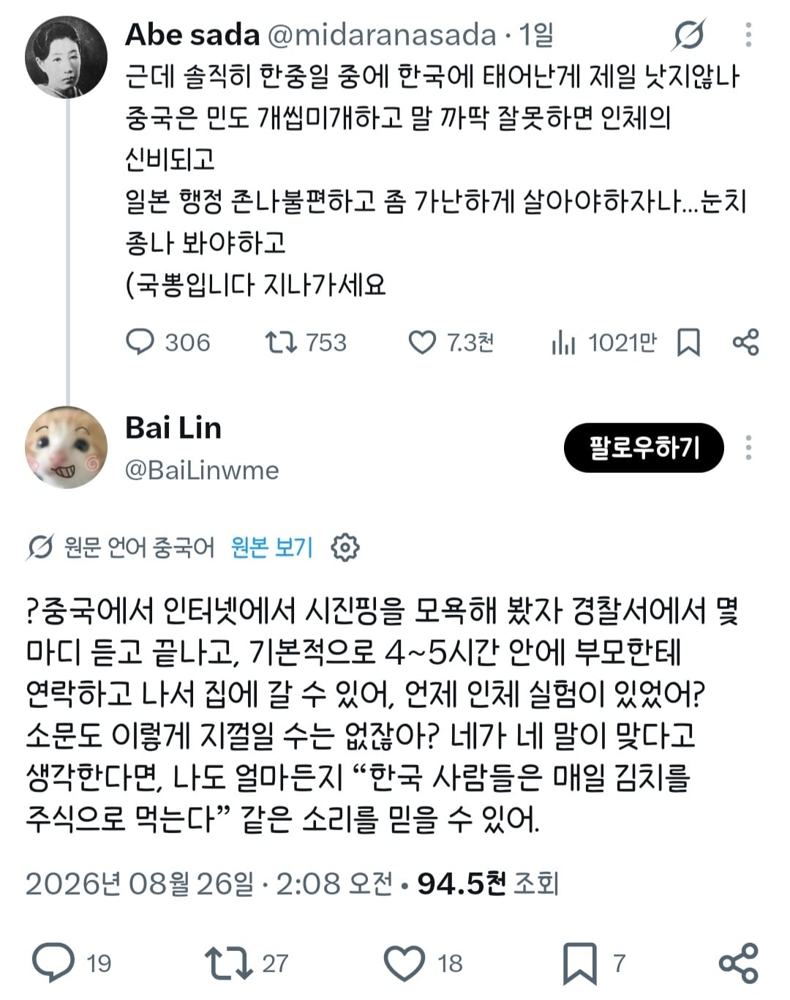

인체가 신비해지진 않고 경찰서에서 4~5시간 정도 있다가 부모님이 데리러 오면 나갈 수 있다고

인체가 신비해지진 않고 경찰서에서 4~5시간 정도 있다가 부모님이 데리러 오면 나갈 수 있다고
아쉽구나 중국인
우린 김치를 매일먹는게 아니라 매끼니 먹는다고!
매일 먹을 김치가 안계시다 이 짜장놈아!
5시간 구금당하는게 아무것도 아닌것처럼 말하는 병신능지
김치는 필수다
부모오면 보내준다는거 보니
애인거 감안했을 때 저정도인가보네
그럼 부모가 없으면 신비해지겠네?
애초에 경찰이 그딴걸로 추적해서 잡아가는거부터 문제잖아
도움이 필요하면 당근을 흔들어주세요

중국인 친구들 몇명 있는데.. 하는 얘기는 생각보다 정부욕, 체제욕 하는건 괜찮다고함 공안들도 한쪽 눈은 뜨고 한쪽눈은 감고 있는다?라는 말이 있다는데 집단/단체가 되어서 뭔가 하려고 하거나 하는거 아니면 개개인이 가지는 불만이나 표현은 그냥 넘어간다고함 터놓고 얘기해보면 다들 존나 우울해하고 무력감 느껴함 잘못됬다고 생각은 하는데 거대한 체제에 개개인이 저항할 수 없고 그냥 소시민으로써 현재 상황에 순응하고 하루하루 행복하게 살아가고 싶어함 언젠가 당이 무너지길 바란다고 하고 너희가 가지는 의견이 중국 내 소수의 의견이냐고 물어보면 그게 아니라 모든 중국인이 같은 생각을 하고 있지만 표현하지 못하는 것 뿐이라고
쟤도 알고 하는 소리 같은데 ㅋㅋㅋㅋㅋ
나도 살려달라는 의미로 읽히는데ㅋㅋㅋㅋ